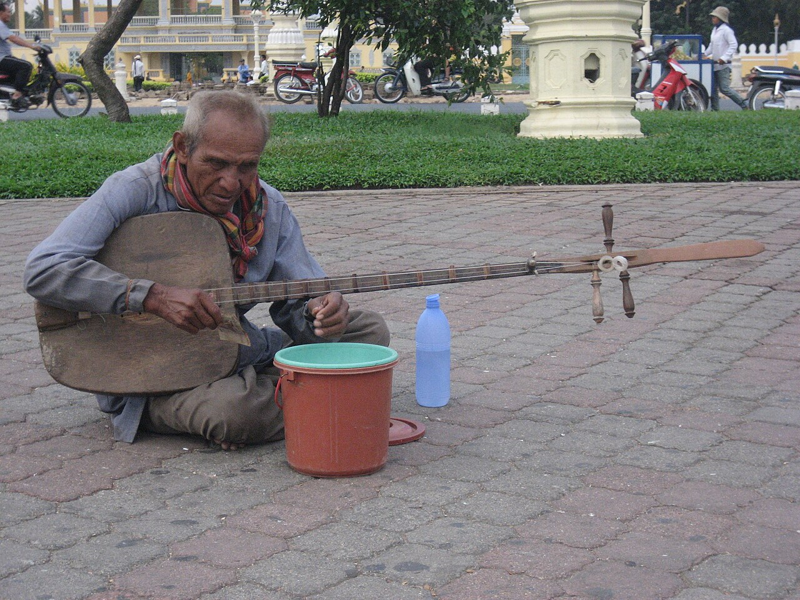

ចាប៉ីដងវែង
ឧបករណ៍ភ្លេងដងវែង និងសំឡេងអ្នកនិទានរឿង — ប្រាជ្ញា កំប្លែង និងមេរៀនជីវិត។
ឧបករណ៍ភ្លេងដងវែង
ចាប៉ីដងវែង ជាឧបករណ៍ភ្លេងខ្សែពីរ ដែលមានដងវែង និងសំឡេងពិរោះ។ អ្នកចាប៉ី ជាអ្នកភ្លេង និងជាអ្នកនិទានរឿងក្នុងពេលតែមួយ — ពួកគេច្រៀង និងនិទានរឿង អមដោយសំឡេងចាប៉ីរបស់ពួកគេ។
អ្នកចាប៉ី ធ្លាប់ជាតួអង្គសំខាន់ក្នុងសង្គមខ្មែរ — ជាអ្នកនាំដំណឹង អ្នកបង្រៀន និងជាអ្នកកម្សាន្ត ដែលធ្វើដំណើរពីភូមិមួយទៅភូមិមួយ។
ប្រាជ្ញាក្នុងបទចម្រៀង
ខ្លឹមសាររបស់ចាប៉ី សម្បូរទៅដោយប្រាជ្ញា៖ កំណាព្យបង្រៀនសីលធម៌ រឿងនិទានបុរាណ ការអត្ថាធិប្បាយសង្គម និងកំប្លែងដ៏ឈ្លាសវៃ។ អ្នកចាប៉ីជំនាញ អាចតែងបទចម្រៀងភ្លាមៗ តាមស្ថានភាព និងទស្សនិកជន។
រាល់បទចម្រៀង ផ្ទុកមេរៀនជីវិត — អំពីសេចក្តីសប្បុរស ការគោរពឪពុកម្តាយ និងការរស់នៅដោយសុខដុមរមនា។
ការការពារ
អ្នកចាប៉ីជំនាន់ចាស់ កំពុងថយចុះ ហើយក្មេងជំនាន់ថ្មី កាន់តែតិចទៅៗដែលរៀនសិល្បៈនេះ។ នៅឆ្នាំ ២០១៦ យូណេស្កូបានចុះចាប៉ីដងវែង ក្នុងបញ្ជីបេតិកភណ្ឌអរូបីដែលត្រូវការការការពារជាបន្ទាន់។
សព្វថ្ងៃ មានកិច្ចខិតខំប្រឹងប្រែងក្នុងការបង្រៀនចាប៉ីដល់ក្មេងជំនាន់ក្រោយ — ដើម្បីឲ្យសំឡេងដ៏ពិរោះនេះ បន្តបន្លឺឡើងទៅមុខទៀត។